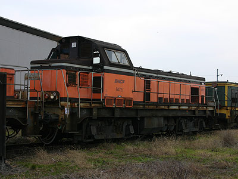
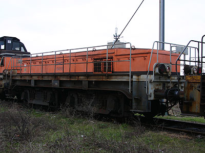
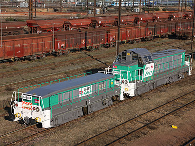
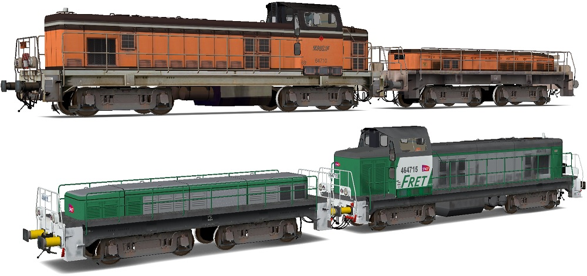

Ferrovia - 28 Juillet 2015
BB 64700 - TBB 64800
Les BB 64700
Les BB 64700 sont des locomotives thermiques-électriques de faible puissance issues de BB 63500 (moteur MGO) modifiées pour les manoeuvres en triage.
Leurs cabines ont été modifiées avec une caisse semblable à celle des BB 66700 et un pupître central. La génératrice de courant continu
est remplacée par un alternateur.
23 machines ont ainsi été transformées entre 1988 et 1992.
Les TBB 64800
Les TBB 64800 sont des trucks moteurs construits à partir de BB 63000 (moteur Sulzer) dont la cabine et le groupe électrogène ont été supprimés. Le
châssis est raccourci.
Seulement 19 trucks sont transformés entre 1989 et 1992.
Service
Les BB 64700 et TBB 64800 forment des couples indissociables. Le groupe électrogène de la 64700 (moteur MGO et alternateur) alimente
les moteurs électriques de la 64700 ainsi que ceux du truck 64800 par des câbles spécifiques.
L'intérêt de cette disposition est de pouvoir manoeuvrer en triage, et notamment la pousse en butte, des convois lourds à faible allure. Ce qui
ne nécessite qu'une puissance modeste mais une adhérence importante. Les ensembles BB 64700-TBB 64800 prennent donc le relais des vieillissantes A1A-A1A 62000 là où
les BB 66700, transformées à partir de 1985, s'avèrent trop justes.
Les couplages reçoivent une livrée dite de "Manoeuvres Arzens" à base d'orange TGV.
A partir de 2007, ils sont modernisés par Socofer. Le moteur MGO est remplacé par un MTU et la livrée Fret est appliquée. Les quatre BB 64700 excédentaires sont radiées.
Malgré cette rénovation récente, la chute d'activité des triages entraine le maintien GBE (Garé Bon Etat) de plusieurs couplages à Sotteville-lès-Rouen.
Quelques données techniques
Constructeur : Brissonneau et Lotz
Chaîne de traction : Alternateur et pont redresseur à diodes,
moteurs de traction à collecteurs
Motorisation : moteur Diesel V12 MGO Turbo (825 ch), puis MTU V8 4000R41 (619 KW)
Pour plus d'info :
La fiche BB 64700 / TBB 64800 sur
Wikipedia
La fiche BB 64700 / TBB 64800 sur trains-europe.fr
L'inventaire des BB 64700 et
TBB 64800 sur Trains du Sud-Ouest

La BB 64715 à Villeneuve St Georges (25/02/2006)

Son truck TBB 64815 à Villeneuve St Georges (25/02/2006)

La BB 64714 remotorisée et TBB 64814 sortent de révision
(St Pierre des Corps, 27/12/2008)
Les BB 64700 et TBB 64800 version Open rails
A.Vedrenne a réalisé deux couplages BB 64700-TBB 64800 en livrées Manoeuvre et Fret pour Open Rails.
